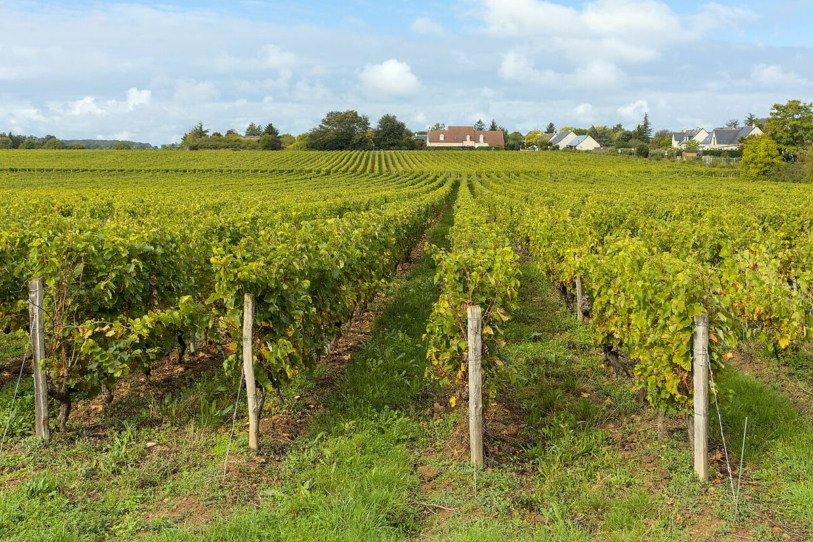

BLANCO
El valle del Loira reúne una sucesión de viñedos a lo largo del río más largo de Francia, desde la costa atlántica hasta el centro del país. Es conocido por la diversidad de sus estilos, con la Melon de Bourgogne, la Chenin Blanc, la Sauvignon Blanc y la Cabernet Franc como protagonistas.

La viticultura se extendió por el valle del Loira en época galorromana y se desarrolló en la Edad Media gracias a las abadías y al propio río, que permitía transportar el vino hacia el interior y hacia los puertos atlánticos. Los comerciantes holandeses tuvieron un papel importante en la demanda de vinos blancos y dulces, y la presencia de la corte real en los castillos del Loira durante el Renacimiento contribuyó al prestigio de la región. En 2000, el valle del Loira entre Sully-sur-Loire y Chalonnes-sur-Loire fue inscrito en la lista del Patrimonio Mundial de la UNESCO como paisaje cultural.
El clima pasa de oceánico, suave y húmedo cerca del Atlántico, a semicontinental en el centro de Francia, con inviernos más fríos y mayor riesgo de heladas. En conjunto es un clima fresco, que da vinos de acidez marcada. Los suelos reflejan dos grandes conjuntos geológicos: al oeste, las rocas antiguas del macizo armoricano, como esquistos, granitos y gneis; hacia el este, las rocas sedimentarias de la cuenca de París, en particular la toba calcárea blanca llamada tuffeau, en cuyas galerías se han excavado numerosas bodegas, además de arcillas con sílex y las margas kimmeridgienses de Sancerre.
Se suelen distinguir cuatro grandes zonas. El Pays Nantais, cerca de la desembocadura, es el dominio del Muscadet, blanco seco de Melon de Bourgogne que a menudo se cría sobre sus lías durante el invierno y se embotella con la mención sur lie. Anjou y Saumur elaboran blancos de Chenin Blanc, secos como los de Savennières o dulces como los de Coteaux du Layon, Bonnezeaux y Quarts de Chaume; tintos de Cabernet Franc, como Saumur-Champigny; rosados como el Rosé d'Anjou y el Cabernet d'Anjou; y espumosos. La Turena ofrece los Chenin de Vouvray y Montlouis-sur-Loire, en estilos que van del seco al dulce y al espumoso, y los tintos de Cabernet Franc de Chinon, Bourgueil y Saint-Nicolas-de-Bourgueil. El Centre-Loire, más al este, es tierra de Sauvignon Blanc, con Sancerre, Pouilly-Fumé, Menetou-Salon, Quincy y Reuilly.
La Chenin Blanc, llamada localmente Pineau de la Loire, es la variedad más versátil de la región, capaz de dar vinos secos, semisecos, dulces y espumosos de gran longevidad. La Sauvignon Blanc domina en el Centre-Loire y en parte de la Turena, y la Melon de Bourgogne en el Pays Nantais. Entre las tintas destacan la Cabernet Franc, acompañada de Cabernet Sauvignon, Gamay, Pinot Noir y Côt, nombre local de la Malbec. La Chardonnay se emplea sobre todo en espumosos, como el Crémant de Loire.